Asahicho, Mie: things to do, food and stays
Asahicho · Mie
Asahicho
Highlighted on the Mie map.

Stay
No bookable places to stay found in Asahicho — nearest options in Kawagoe.
Dining
ラーメンちゃん 朝日本店
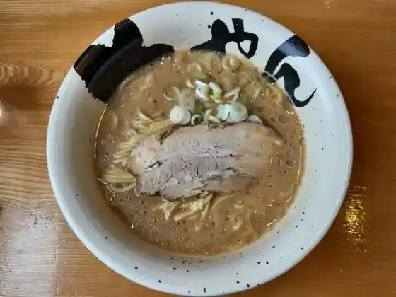
Ramen Chan Asahi Hon
EAGLE
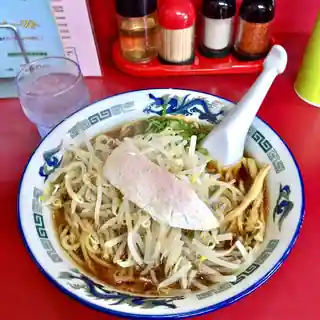
EAGLE
パティスリー シェ ニノ
Pateisuri Shie Nino
うどん処 三六
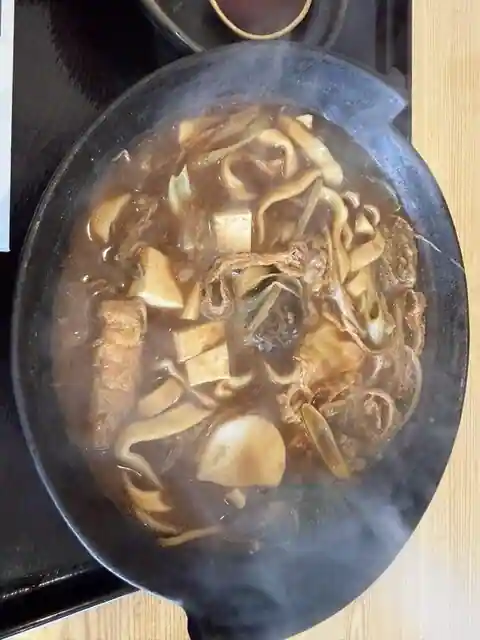
Udon Tokoro Sanroku
元祖豚丼屋TONTON 朝日町店
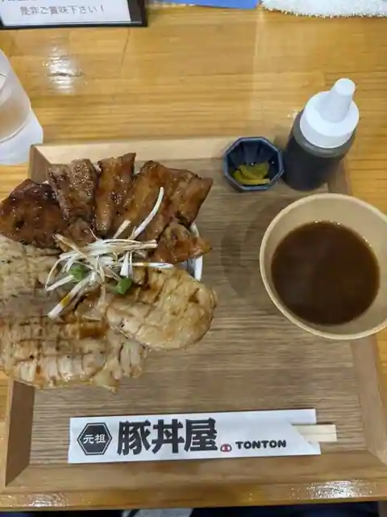
Ganso Butadon Ya TONTON Asahi Machi
ことよ 白梅の丘店
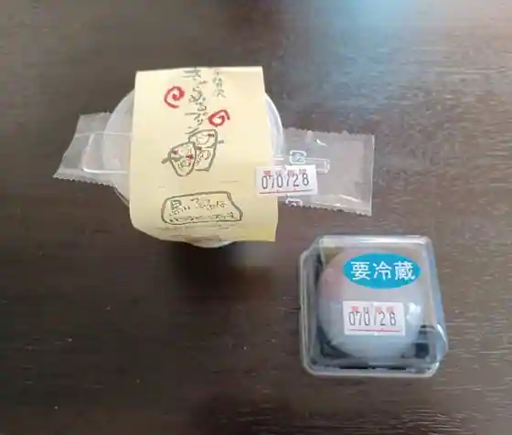
Kotoyo Shiraume No Oka
うどん つる吉
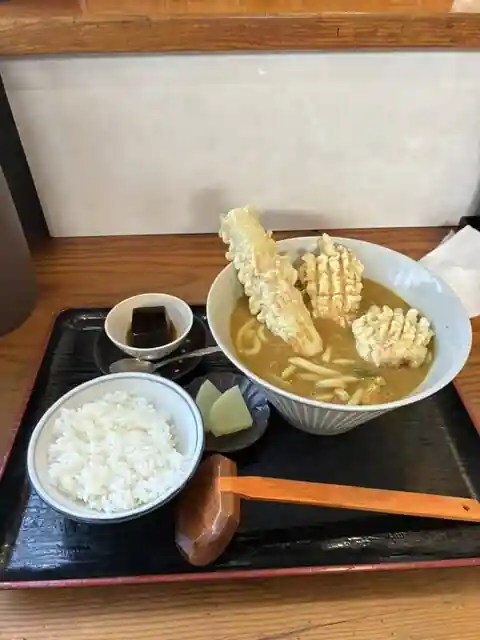
Udon Tsuru Kichi
日乃出
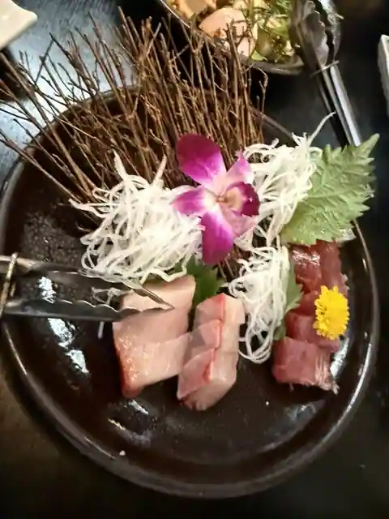
Nichi No Shutsu
CHAND PUR
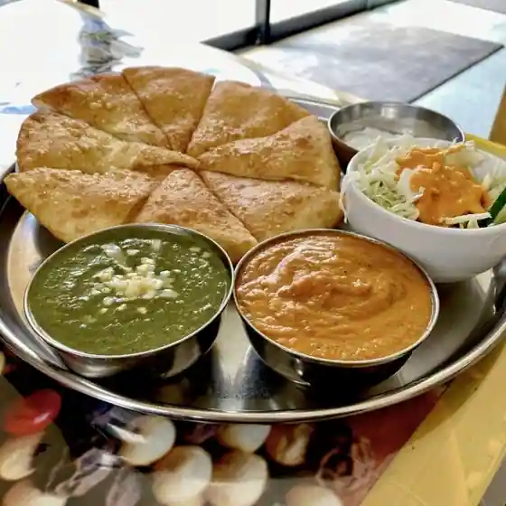
CHAND PUR
NAMASTE 朝日店
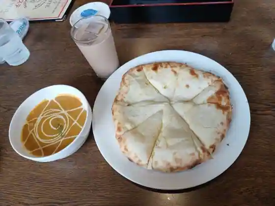
NAMASTE Asahi
餃子の王将 三重朝日店
Gyoza No Osho Mie Asahi
Cord Cafe
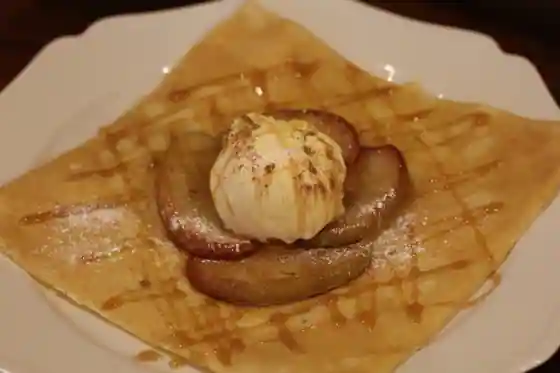
Cord Cafe
新時代 三重朝日店
Shinjidai Mie Asahi
SLOTH COFFEE & TEA
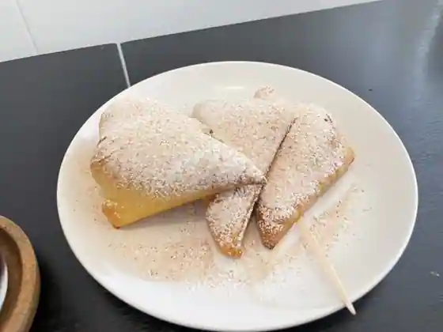
SLOTH COFFEE & TEA
カフェ クッカ
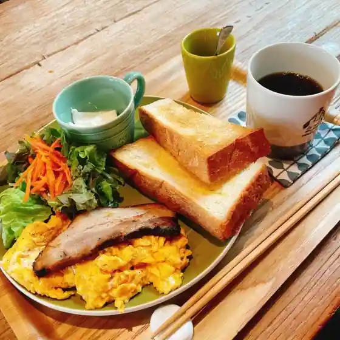
Cafe Kukka
韓国焼肉 ホドリ
Kankoku Yakiniku Hodori
中華料理 旗勝
Chukaryori Hata Kachi
ガスト 三重朝日町店
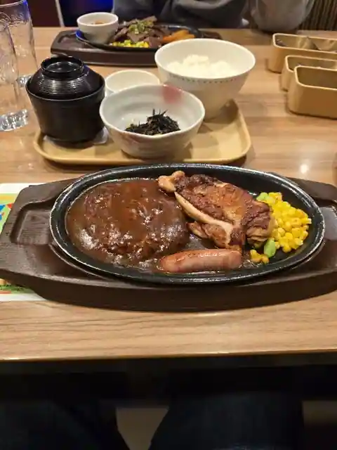
Gusto Mie Asahi Machi
モスバーガー 三重朝日店

Mosu Burger Mie Asahi
めぐり茶屋
Meguri Chaya
極旨醤油らーめん 一刻魁堂 朝日店
Gokuma Shoyu Ramen Ikkoku Kai Do Asahi
すき家 1国朝日店
Suki Ie 1 Kokucho Nichi
ベリーベジー
Beribeji
家庭酒菜 ままる
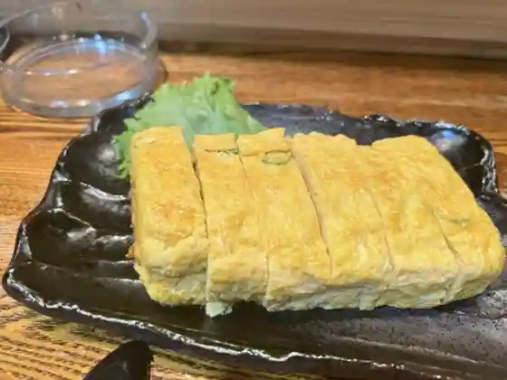
Katei Shusai Mamaru
Sights
Komukai Shrine
Zensho Tera

Saiko Tera

Josen Bo

Asahicho History Museum

Tachibana Shu Bu Tanjo Chi Iseki
Masamitsu Tera
Nawa Nama Haiji Ato
I Ta Shrine
Tokaido (Asahicho)
Asobikkusu Asahi
Asahicho Museum
Asahi Baths